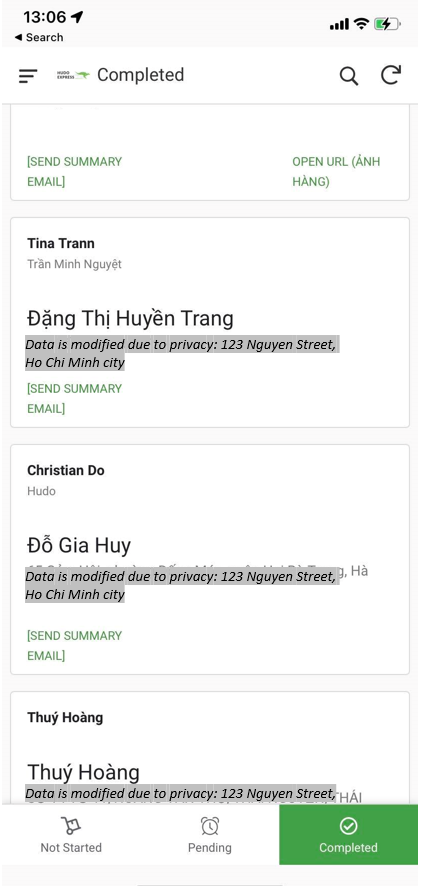

Google Appsheet as Operational Control Center
In response to the growing demands and complexities of our freight and logistics business, Hudo Express, I embarked on a project to implement Google Appsheet as our central operational app. The goal was to streamline and enhance our packaging process, ultimately improving efficiency, reducing costs, and maximizing profits.
Prior to implementing Appsheet, our packaging process faced significant challenges. We struggled to consistently meet our target of processing 1kg of goods for less than $2 per labor hour in 2021. There were frequent delays and repeated tasks, impacting our productivity and profitability. It became clear that we needed a comprehensive solution to address these bottlenecks and optimize our operations.
Using Google Appsheet, I took the lead in designing and implementing an operational control center using this platform. The primary objective was to create a user-friendly application that would assist our warehouse team in differentiating goods, creating bookings, and tracking workflows seamlessly.
To begin, I conducted research and analysis to understand the specific pain points and requirements of our packaging process. Through open discussions with the warehouse team and direct observations, I gained valuable insights into their workflow and identified areas for improvement. This allowed me to tailor the Appsheet application to our unique operational needs.
The Appsheet application was designed to provide a clear and intuitive interface for the warehouse team. It enabled them to easily identify different types of goods and synchronize the recording of essential details with the creation of bookings. Additionally, the application automatically tracked the start and end times of each workflow, capturing valuable data for analysis and continuous improvement efforts.
The implementation of the Appsheet operational control center yielded significant improvements in our packaging process. By leveraging the capabilities of the application, we achieved remarkable results, including:
- Cost Reduction: The optimized workflow and streamlined processes resulted in a reduction in labor costs. We consistently achieved our target of processing 1kg of goods for less than $2 per labor hour, leading to substantial cost savings.
- Increased Efficiency: The Appsheet application eliminated the need for redundant tasks and reduced delays in the packaging process. This enabled our team to work more efficiently, resulting in improved turnaround times and increased customer satisfaction.
- Enhanced Accuracy: By providing a structured and standardized approach to capturing details and creating bookings, the application minimized errors and improved data accuracy. This reduced the likelihood of shipment discrepancies and improved overall operational reliability.
- Real-time Insights: The comprehensive tracking and recording capabilities of the Appsheet application provided us with valuable real-time data and insights into our packaging process. This allowed us to monitor performance, identify bottlenecks, and make data-driven decisions for further process optimization.
The implementation of Google Appsheet as our operational control center proved to be a game-changer for Hudo Express. By leveraging this powerful platform, we successfully addressed the challenges faced in our packaging process and achieved remarkable results. The application not only optimized our workflow but also enhanced accuracy, reduced costs, and improved overall efficiency. It served as a catalyst for sustainable growth and profitability.
This project showcased my expertise in process analysis, problem-solving, and technology implementation. By harnessing the capabilities of Google Appsheet and fostering collaboration within our team, we successfully transformed our packaging operations and established a strong foundation for future success. The success of this initiative demonstrates my ability to drive operational excellence and leverage technology to achieve tangible business outcomes.